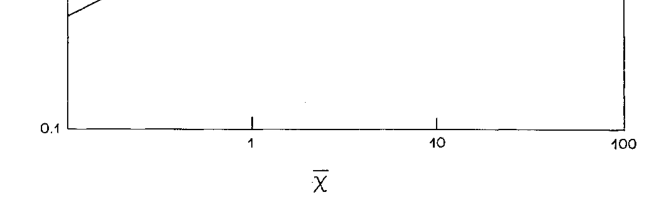
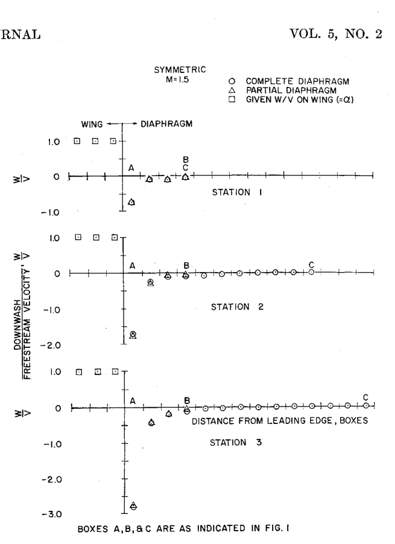
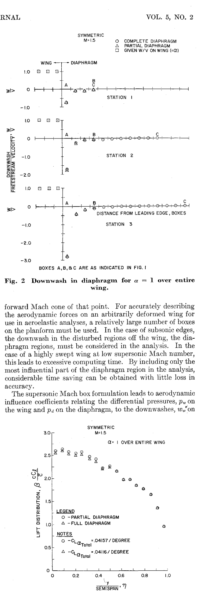

01中文摘要
针对激波诱导层流分离，指出充分分离流在入射区具有近似恒压平台。起始分离定义为干扰区一点壁面剪应力为零、分离点与再附点重合。Holden实验把起始分离整理为M∞δ_incip与χ的关系并经验得到M∞δ_incip∝χ^0.5。本文用Hankey-Cross闭式分析验证相似性：以Crocco-Lees连续性、Prandtl-Meyer关系与积分边界层方程耦合，得到二阶微分方程，在冷壁取K_s≈−0.14、dH_iT/dK≈−15，导出M∞δ_incip≈1.3χ^0.5，与Holden数据相符。
02阅读说明
两页技术札记（AIAA Journal, 1967, Vol. 5, No. 2, pp. 355–356；1966-06-20 收稿，1966-08-10 修回）。类型为解析/理论，附与 Holden 高超实验数据的对比。材料是扫描双栏页，bundle 的 OCR 文本列序严重错乱（如出现 'Oincip = *KS 777- dK flej'），因此公式与符号均对照原 PDF 第 1–2 页图像核读。第 2 页下半栏开始另一篇技术札记（Hassig, Messina & Twomey, 'Using a Partial Diaphragm When Applying the Supersonic Mach Box Method'），图件清单中的图 2、图 3 属于该相邻札记，本文正文未引用；本文实际只有图 1。个别细小符号（平方根内是 M/Re_θ 还是 θ/Re_θ、L² 定义中的 c）受扫描清晰度限制，已用最终式 Mδincip = 1.3χ̄^{1/2} 交叉核对，仍不能完全排除排版或 OCR 误差。 文章类型：期刊
03一句话核心与三句话摘要
用 Crocco–Lees 与 Prandtl–Meyer 耦合的闭式分析，导出冷壁起离判据 Mδincip = 1.3χ̄^{1/2}。
- Holden 在高超速实验中把起离条件归纳为 Mδincip 随黏性干扰参数 χ̄ 变化，并经验地认定 Mδincip 正比于 χ̄^{1/2}（p.355 左栏）。 原文明确
- 本文把 Crocco–Lees 连续性关系、Prandtl–Meyer 等熵转折与积分边界层关系合成为二阶常微分方程，并借助 Falkner–Skan 上下支的准相似假设求闭合解（p.355 右栏）。 AI概括
- 代入冷壁常数 K_s ≈ −0.14、dH_u/dK ≈ −15 后，判据化为 Mδincip = 1.3χ̄^{1/2}，作者将其绘于 Fig. 1 并与 Holden 数据对照（p.356 左栏、Fig. 1）。 原文明确
04核心内容清单
| 要点 | 类型 | 重要性 | 原文依据 | 属性 |
|---|---|---|---|---|
| 高超层流激波–边界层干扰中，完全分离的干扰区具有近常压平台；激波减弱时平台缩小，直到完全附着。 | 物理现象 | A | p.355 左栏 | 原文明确 |
| 起离（incipient separation）定义为逆压梯度刚好足以使边界层分离：干扰区仅一点零壁面剪应力，分离点与再附点重合。 | 概念定义 | A | p.355 左栏 | 原文明确 |
| Holden 用高超相似参数 Mδincip 对黏性干扰参数 χ̄ 作相关，经验得到 Mδincip ∝ χ̄^{1/2}，但未给出解析依据。 | 研究背景 | A | p.355 左栏 | 原文明确 |
| 本文采用 Ref. 2 的近似闭式解（Lees–Reeves 方法的简化），以 Falkner–Skan 上、下支分别描述附着与分离的准相似边界层。 | 方法基础 | A | p.355 左栏 | 原文明确 |
| 黏性与无黏流动由三条关系耦合：Crocco–Lees 连续性 dδ*/dx = Δθ、Prandtl–Meyer 关系 Δθ = −Δν = (dν/dM)(M₁ − M)、积分边界层关系 δ* = Hθ。 | 控制方程 | A | p.355 左栏 | 原文明确 |
| 三式合并为二阶方程 L²d²M/dx² = M − M₁(x)，其形式类似受迫振动；求解需上下游边界条件并处理分离、再附、激波入射处间断。 | 控制方程 | A | p.355 右栏 | 原文明确 |
| 楔致或激波致分离的起离条件为 (M₁ − M₂)incip = −2K_sL/ε̄，其中 L² = −(dH_u/dK)cθ(1 + 0.2M²)dM/dν，ε̄ = θRe_θ/M。 | 解析结果 | A | p.355 右栏 | 原文明确 |
| 小角度下 (M₁ − M₂)incip = (dM/dν)δincip，合并后得 δincip = −2K_s[−(dH_u/dK)M/Re_θ]^{1/2}。 | 解析结果 | A | p.355 右栏 | 原文明确 |
| 对平板取 Re_θ = 0.664Re_x^{1/2}、χ̄ = M³/Re_x^{1/2}，判据化为 Mδincip = −2K_s(−dH_u/0.664dK)^{1/2}χ̄^{1/2}。 | 解析结果 | A | p.355 右栏 | 原文明确 |
| 冷壁取 K_s ≈ −0.14、dH_u/dK ≈ −15，得 Mδincip = 1.3χ̄^{1/2}；该式绘于 Fig. 1 并与 Holden 数据对照。 | 核心结论 | A | p.356 左栏、Fig. 1 | 原文明确 |
| H_u 与 K 是壁温比 T_w/T_e 的函数，因此相似律除 χ̄ 外还隐含壁温依赖；冷壁常数只是一组特定取值。 | 机理解释 | B | p.356 左栏 | 原文明确 |
| Fig. 1 的直线与 Holden 数据在趋势和量级上相符，可视为对经验相似律的解析支持；但只有一组数据，未给误差带，吻合程度未定量化。 | 证据评价 | B | p.356、Fig. 1 | AI概括 |
05引言：研究问题与领域缺口
文章从激波诱导层流分离的压强分布出发：完全分离时干扰区出现近常压平台，激波减弱则平台缩小，直至完全附着、压强均匀上升；起离对应“干扰区仅一点零摩阻、分离点与再附点重合”的临界状态（p.355 左栏）。Holden 已在高超速下测量压强与热流，并用高超相似参数 Mδincip 对黏性干扰参数 χ̄ 作相关，经验得到 Mδincip ∝ χ̄^{1/2}；但这一相似律缺少解析依据。本文目标是验证 Holden 的观察，给出起离的近似闭式判据及比例系数，并说明壁温比 T_w/T_e 通过 H_u 与 K 进入判据（p.355 左栏；p.356 左栏）。
06流动条件与几何构型
| 项目 | 数值/描述 | 依据 | 备注 |
|---|---|---|---|
| 流动状态 | 高超速层流边界层 | p.355 左栏 | |
| 干扰类型 | 楔致分离或激波致分离（wedge-induced or shock-induced separation） | p.355 右栏 | |
| 几何构型 | 最终相似律针对平板；一般式针对二维干扰区 | p.355 右栏 | |
| 壁温条件 | 冷壁（cold wall），常数 K_s 与 dH_u/dK 为该条件下的值 | p.356 左栏 | |
| 分离角假设 | 小角度（for small angles），δincip 以弧度计 | p.355 右栏 | |
| 边界层模型 | 准相似流；附着与分离分别用 Falkner–Skan 上支、下支 | p.355 左栏 | |
| 方法层级 | Lees–Reeves 方法的简化闭式分析 | p.355 左栏 | |
| Mach 数与 Reynolds 数范围 | 文中未提及；Fig. 1 只给出 χ̄ 轴，未标注具体 M 或 Re_x 范围 | p.355–356、Fig. 1 | |
| 参考长度 | 轴向距离 x；平板以 Re_x 与 Re_θ 为参考 | p.355 右栏 |
07核心现象与关键参数
| 参数 | 定义 | 数值 | 关系/说明 | 依据 |
|---|---|---|---|---|
| Mδincip | 高超相似参数：来流 Mach 数与起离时壁面角变化（分离角）之积 | 文中以 Fig. 1 纵轴给出；冷壁下等于 1.3χ̄^{1/2} | Mδincip = 1.3χ̄^{1/2} | p.355 左栏、p.356、Fig. 1 |
| χ̄ | 黏性干扰参数（viscous interaction parameter） | χ̄ = M³C_ω^{1/2}/Re_x^{1/2}（bundle 记作 M*Cw1/2/Re1/2；Fig. 1 横轴） | 与 Mδincip 成平方根关系 | p.355 左栏命名表、p.355 右栏、Fig. 1 |
| K_s | 分离点处取值的压强梯度参数（pressure gradient parameter evaluated at separation） | 冷壁 K_s ≈ −0.14 | 进入起离条件 (M₁ − M₂)incip = −2K_sL/ε̄ | p.355 右栏、p.356 左栏 |
| dH_u/dK | 上支形状因子对压强梯度参数的导数，在分离点取值 | 冷壁 dH_u/dK ≈ −15 | 出现在 δincip 与最终相似律的系数中 | p.355 右栏、p.356 左栏 |
| Re_θ | 以动量厚度为参考长度的 Reynolds 数 | 平板 Re_θ = 0.664Re_x^{1/2} | ε̄ = θRe_θ/M | p.355 右栏 |
| Re_x | 以轴向距离 x 为参考长度的 Reynolds 数 | 文中未给出具体数值；与 χ̄ 的定义相连 | χ̄ = M³/Re_x^{1/2} | p.355 右栏 |
| L | 边界层参数（boundary-layer parameter） | L² = −(dH_u/dK)cθ(1 + 0.2M²)dM/dν | 进入二阶方程 L²d²M/dx² = M − M₁ 与起离条件 | p.355 右栏 |
| ε̄ | 变换后的边界层参数 | ε̄ = θRe_θ/M | 起离条件分母 | p.355 右栏 |
| H | 形状因子 H = δ*/θ | 文中未给出数值；其上支值 H_u 随 K 变化 | δ* = Hθ | p.355 左栏命名表、p.355 右栏 |
| dM/dν | Mach 数对 Prandtl–Meyer 转折角的导数 | 高超速下 dM/dν = (1 + 0.2M²)M(M² − 1)^{−1/2} − 1 + 0.2M² | 把马赫数差与分离角联系起来 | p.355 右栏 |
| T_w/T_e | 壁面温度与边界层边缘温度之比 | 文中未给出具体数值；H_u 与 K 是其函数 | 冷壁常数对应特定 T_w/T_e | p.356 左栏 |
| c | 边界层参数（boundary-layer parameter，命名表原词） | 文中未给出数值；出现在 L² 定义中 | L² = −(dH_u/dK)cθ(1 + 0.2M²)dM/dν | p.355 左栏命名表、p.355 右栏 |
08方法与数据
采用 Ref. 2 的激波–边界层干扰近似闭式解，它是 Lees–Reeves 方法（Ref. 3）的简化：流动按准相似处理，附着与分离的相似边界层分别取 Falkner–Skan 上、下支（p.355 左栏）。黏性与无黏流动由三条关系耦合：Crocco–Lees 连续性 dδ*/dx = Δθ；等熵 Prandtl–Meyer 关系 Δθ = −Δν = (dν/dM)(M₁ − M)；积分边界层关系 δ* = Hθ。三式合并为相互作用区的二阶常微分方程 L²d²M/dx² = M − M₁(x)，其形式类似受迫振动方程（p.355 右栏）。求解需给定上游与下游边界条件，并处理分离、再附与激波入射处的间断；起离条件取 Ref. 2 的 (M₁ − M₂)incip = −2K_sL/ε̄。随后用小角度关系把马赫数差换成分离角，再用平板 Re_θ = 0.664Re_x^{1/2} 与 χ̄ 的定义化为相似律，最后与 Holden 的实验数据（Ref. 1）在 Fig. 1 中比较（p.355 右栏；p.356 左栏）。
| 项目 | 内容 | 依据 | 备注 |
|---|---|---|---|
| 总体方法 | 激波–边界层干扰的近似闭式解析（Ref. 2），为 Lees–Reeves 方法的简化 | p.355 左栏 | |
| 黏性–无黏耦合 | 用 Crocco–Lees 连续性方程耦合：dδ*/dx = Δθ | p.355 左栏 | |
| 无黏流动模型 | 简单 Prandtl–Meyer 等熵流：Δθ = −Δν = (dν/dM)(M₁ − M) | p.355 左栏 | |
| 边界层积分模型 | δ* = Hθ，以形状因子闭合 | p.355 左栏 | |
| 相互作用方程 | 合并三式得 L²d²M/dx² = M − M₁(x)，类比受迫振动 d²x/dt² ± ω²x = f(t) | p.355 右栏 | |
| 边条件与间断处理 | 施加一个上游和一个下游边界条件，并处理分离、再附、激波入射处的不连续 | p.355 右栏 | |
| 起离判据 | (M₁ − M₂)incip = −2K_sL/ε̄，来自 Ref. 2 的楔致/激波致分离结果 | p.355 右栏 | |
| 小角度换算与平板化简 | (M₁ − M₂)incip = (dM/dν)δincip；再用 Re_θ = 0.664Re_x^{1/2} 与 χ̄ = M³/Re_x^{1/2} 化为相似律 | p.355 右栏 | |
| 实验对照 | 将 Mδincip = 1.3χ̄^{1/2} 绘于 Fig. 1，与 Holden（Ref. 1）的高超实验数据比较 | p.356 左栏、Fig. 1 |
09核心推导与公式
把无黏 Prandtl–Meyer 转折、Crocco–Lees 黏性连续性以及积分边界层闭合关系联立，消去 δ*、Δθ，得到以 Mach 数 M(x) 为未知量的二阶常微分方程；再以“分离点与再附点重合”的起离条件求解该方程在两点的马赫数差，最后用小角度几何关系和平板边界层关系化为 Mδincip–χ̄ 相似律。
关键假设
- 高超速、层流、二维激波–边界层干扰（p.355）
- 准相似流：附着与分离边界层分别取 Falkner–Skan 上支与下支（p.355）
- 无黏流为等熵 Prandtl–Meyer 流动（p.355）
- 边界层可用积分关系 δ* = Hθ 闭合（p.355）
- 起离为小角度扰动，δincip 以弧度计（p.355）
- 最终相似律针对平板，并使用冷壁常数（p.355–356）
推导过程
原文以 Crocco–Lees 连续性方程把黏性位移与无黏转折耦合，给出 dδ*/dx = Δθ。
无黏流按简单 Prandtl–Meyer 流描述，Δθ = −Δν = (dν/dM)(M₁ − M)，其中 M₁ 为无黏上游 Mach 数。
边界层用积分方法描述，取 δ* = Hθ，H 为形状因子。
把上述三式联立，得到 L²d²M/dx² = M − M₁(x)。原文指出其形式类似受迫振动方程，无黏 Mach 数相当于驱动力 f(t)。
引用 Ref. 2 的结果，楔致或激波致分离的起离条件为 (M₁ − M₂)incip = −2K_sL/ε̄；其中 L²、ε̄ 与 dM/dν 的定义如原文所示，dM/dν 取高超速形式。
对小的起离角，激波前后无黏 Mach 数差与 δincip 成正比：(M₁ − M₂)incip = (dM/dν)δincip。
把起离条件代入小角度关系，并利用 ε̄ = θRe_θ/M，得到 δincip = −2K_s[−(dH_u/dK)M/Re_θ]^{1/2}。原文以“Combining … or”过渡，未展开中间代数；此处按原文公式重排，高超速下 (1 + 0.2M²)/(dM/dν) 近似为 1 的化简属于【AI推断】。
对平板取 Re_θ = 0.664Re_x^{1/2}，并用 χ̄ = M³/Re_x^{1/2}。由 Mδincip 乘上式，得到 Mδincip = −2K_s(−dH_u/0.664dK)^{1/2}χ̄^{1/2}。
冷壁条件下取 K_s ≈ −0.14、dH_u/dK ≈ −15，系数为 −2(−0.14)(15/0.664)^{1/2} ≈ 1.33，文中取 1.3，故 Mδincip = 1.3χ̄^{1/2}。
适用边界：原文只给出三条基本关系、二阶方程、起离条件和最终式，未展开逐步代数；步骤 7 的化简细节与平方根内符号受扫描清晰度和 Ref. 2 未展开的限制，不能完全确认；冷壁常数对应的 T_w/T_e 未给出；准相似与 Falkner–Skan 上下支是方法本身的近似。
10结果：主要发现与关键证据
起离条件为 (M₁ − M₂)incip = −2K_sL/ε̄，其中 L² = −(dH_u/dK)cθ(1 + 0.2M²)dM/dν，ε̄ = θRe_θ/M，dM/dν = (1 + 0.2M²)M(M² − 1)^{−1/2} − 1 + 0.2M²（高超速形式）（p.355 右栏）。由小角度关系 (M₁ − M₂)incip = (dM/dν)δincip 合并得 δincip = −2K_s[−(dH_u/dK)M/Re_θ]^{1/2}；对平板代入 Re_θ = 0.664Re_x^{1/2}、χ̄ = M³/Re_x^{1/2}，得到 Mδincip = −2K_s(−dH_u/0.664dK)^{1/2}χ̄^{1/2}（p.355 右栏）。冷壁取 K_s ≈ −0.14、dH_u/dK ≈ −15，数值系数为 2×0.14×(15/0.664)^{1/2} ≈ 1.33，文中写作 Mδincip = 1.3χ̄^{1/2}（p.356 左栏）。Fig. 1 以 Mδincip 为纵轴、χ̄ 为横轴，绘出该直线与 Holden 的数据点（p.356、Fig. 1）。
| 发现 | 证据 | 证据类型 | 强度 | 位置 | 属性 |
|---|---|---|---|---|---|
| 起离条件可写成激波前后无黏 Mach 数差与边界层参数的闭式关系 (M₁ − M₂)incip = −2K_sL/ε̄。 | p.355 右栏明确给出该式，并说明它来自 Ref. 2 对楔致或激波致分离的推导。 | 解析结果 | 强 | p.355 右栏 | 原文明确 |
| Crocco–Lees 连续性、Prandtl–Meyer 关系与 δ* = Hθ 合并后，干扰区由二阶方程 L²d²M/dx² = M − M₁(x) 控制，数学上类似受迫振动。 | p.355 右栏逐式给出三条关系、二阶方程及受迫振动类比 (d²x/dt²) ± ω²x = f(t)。 | 解析结果 | 强 | p.355 右栏 | 原文明确 |
| 小角度下起离角满足 δincip = −2K_s[−(dH_u/dK)M/Re_θ]^{1/2}。 | 由 (M₁ − M₂)incip = (dM/dν)δincip 与上一式合并，p.355 右栏给出该式（平方根内符号受扫描清晰度限制，已与最终式交叉核对）。 | 解析结果 | 中 | p.355 右栏 | 原文明确 |
| 对平板代入 Re_θ = 0.664Re_x^{1/2}、χ̄ = M³/Re_x^{1/2}，判据化为 Mδincip = −2K_s(−dH_u/0.664dK)^{1/2}χ̄^{1/2}。 | p.355 右栏“However, for the flat plate … Therefore”一段给出两条平板关系及最终相似式。 | 解析结果 | 强 | p.355 右栏 | 原文明确 |
| 冷壁条件下 K_s ≈ −0.14、dH_u/dK ≈ −15，数值系数约为 1.3，即 Mδincip = 1.3χ̄^{1/2}。 | p.356 左栏给出两常数与最终式；按式验算 2×0.14×(15/0.664)^{1/2} ≈ 1.33，与文中 1.3 一致。 | 定量结果 | 强 | p.356 左栏 | 原文明确 |
| 作者用 Fig. 1 将上述直线与 Holden 的数据对照，认为解析结果证实了 Holden 的相似性推断并给出比例系数的近似量级。 | Fig. 1 纵轴 Mδincip、横轴 χ̄，图中直线标为 Mδincip = 1.3χ̄^{1/2}，并标有“DATA OF REFERENCE 1”；p.356 正文明确表述“substantiates the similitude deductions of Holden”。 | 实验对比 | 中 | p.356、Fig. 1 | 原文明确 |
| 壁温比 T_w/T_e 通过 H_u 与 K 进入判据，因此相似律除 χ̄ 外还隐含壁温依赖。 | p.356 左栏开头指出 H_u 与 K 是 T_w/T_e 的函数，冷壁值只是其中一组；正文称 Mδincip 是 χ̄ 与 T_w/T_e 的函数。 | 机理解释 | 中 | p.356 左栏 | 原文明确 |
11机制解释与论证链
激波或楔面造成逆压梯度，边界层增厚并产生位移效应；位移厚度改变有效无黏型面，进而改变当地 Mach 数与激波后的压强分布，形成黏性–无黏反馈。亚临界时反馈收敛，边界层保持附着；当逆压梯度增大到临界值，干扰区出现唯一的零壁面剪应力点，分离点与再附点重合，即起离。闭式分析把这一反馈写成 L²M'' = M − M₁(x)：无黏马赫数 M₁(x) 充当“驱动力”，L 表征边界层的空间记忆/刚度。小角度下，起离角与激波前后马赫数差成正比；平板边界层增长律与 χ̄ 的定义把 M、Re_x 组合成单一相似参数，因此冷壁常数给出一条斜率为 1.3 的 Mδincip–χ̄^{1/2} 直线。
12讨论：结论、贡献与局限
作者认为该解析结果证实了 Holden 的相似性推断：Mδincip 是 χ̄ 与壁温比 T_w/T_e 的函数，并给出了比例系数的近似量级（p.356 左栏）。机制上，无黏转折角与黏性排移厚度互相反馈：激波致逆压梯度使边界层增厚，排移又改变有效无黏型面与马赫数分布；起离时这一反馈刚好使干扰区出现单点零摩阻。局限也明显：全文仅两页，推导细节全部指向 Ref. 2；准相似与 Falkner–Skan 上下支是强假设；冷壁常数取自 Ref. 2；Fig. 1 只有 Holden 一组数据，未给出误差带；高超速、层流、小角度与平板是结论成立的前提。文章没有讨论热壁、湍流、强分离或三维效应。
作者结论
在准相似、层流、高超速、冷壁、小角度与平板的假设下，激波/楔致分离的起离条件可由闭式分析化为 Mδincip = 1.3χ̄^{1/2}。该式给出 Holden 经验相似律 Mδincip ∝ χ̄^{1/2} 的解析依据与比例系数约 1.3，并表明 Mδincip 还是壁温比 T_w/T_e 的函数（通过 H_u、K）。作者据此认为解析结果“证实”了 Holden 的相似性推断，同时给出了比例系数的近似量级（p.356 左栏）。
局限与未解决问题
（1）全文仅两页，关键推导细节全部指向 Ref. 2，本文只列三条基本关系、二阶方程和结果式，无法独立复核完整代数。（2）采用准相似与 Falkner–Skan 上/下支描述附着与分离边界层，属于强近似；对强分离、非平衡或湍流不适用。（3）冷壁常数 K_s ≈ −0.14、dH_u/dK ≈ −15 取自 Ref. 2，本文未说明其对应的具体 T_w/T_e，也未讨论热壁外推。（4）结论依赖小角度、平板、二维与高超速层流假设；Mach 数、Re_x 范围文中未提及。（5）实验对照仅 Fig. 1 一组 Holden 数据，未给散度、误差带或定量拟合优度；图中直线与数据的一致性为目视判断。（6）本 PDF 第 2 页夹有相邻技术札记，图 2、图 3 不属于本文，本文可用的独立图件只有 Fig. 1。（7）扫描/OCR 使个别符号（平方根内的 M/Re_θ、L² 中的 c）不能完全确认，受限于材料，无法确认其排版细节。
13对高速流动与工程的意义
把 Holden 的纯经验相关提升为有物理模型的闭式判据，并首次（在本文范围内）给出冷壁高超层流起离的比例系数 1.3；Mδincip–χ̄^{1/2} 形式简单，可作为工程上判断楔/激波干扰是否起离的快速估计，也为后续考虑壁温效应的相似律提供了框架。其价值主要在“给出解析依据与量级”，而非高精度预测。
14核心图件



15可引用原文素材
| 原文短句 | 可支持的观点 | 位置 | 使用建议 |
|---|---|---|---|
| “viscous interaction parameter” | χ̄ 的物理身份与相似参数地位 | p.355 左栏命名表 | 术语 |
| “the data of Holden” | Fig. 1 的实验数据来源 | p.356 左栏；Fig. 1 图内标注 'DATA OF REFERENCE 1' | 实验对照 |
| “cold wall case” | K_s 与 dH_u/dK 数值的适用条件 | p.356 左栏 | 适用条件 |
| “dδ*/dx = Δθ” | Crocco–Lees 连续性耦合关系 | p.355 左栏 | 公式 |
| “δ* = Hθ” | 积分边界层闭合假设 | p.355 左栏 | 公式 |
| “L²d²M/dx² = M − M₁(x)” | 干扰区二阶控制方程 | p.355 右栏 | 公式 |
| “K_s ≈ −0.14” | 冷壁起离判据的数值系数 | p.356 左栏 | 参数 |
| “M δincip = 1.3 χ̄^{1/2}” | 本文核心相似律 | p.356 左栏；Fig. 1 图内公式 | 结论 |
16最终核验
| 核验项 | 结论 |
|---|---|
| 仅基于全文 | 仅使用 bundle 的元数据、图注与带页码全文，并对照原 PDF 第 1–2 页图像核读公式；未检索外部文献、未引入外部知识。 |
| A 级要点有依据 | A 级要点均给出 p.355 或 p.356 的公式、Fig. 1 或原文句子作为依据；B 级要点注明为概括或推断，C 级未使用。 |
| 属性标注 | three_sentence、core_points、findings 均逐条标注【原文明确】【AI概括】【AI推断】；推导步骤中对未展开代数的重排明确标为 AI 推断。 |
| 覆盖范围 | bundle 共 157 行，已全读；原 PDF 共 2 页，已全读（未超过 6 页上限）；bundle 图件清单 3 项均已登记并注明归属。 |
| 无编造 | 未编造页码、图号、公式或数据；无法确认处写“受限于材料，无法确认”，缺失信息写“文中未提及”；图 2、图 3 明确标注为同页相邻札记，不计入本文结论证据。 |
需回原文确认
- 平方根内究竟是 M/Re_θ 还是 θ/Re_θ，受扫描清晰度限制无法百分之百确认；本文依据最终式 Mδincip = 1.3χ̄^{1/2} 反推为 M/Re_θ。
- 边界层参数 c 的物理定义与取值文中未给出，L² 定义中 c 是否在化简中被吸收无法确认。
- 冷壁常数 K_s ≈ −0.14、dH_u/dK ≈ −15 对应的具体 T_w/T_e 未在本文给出，需查 Ref. 2。
- Fig. 1 中 Holden 数据的点数、对应 Mach 数与壁温条件、误差范围均未说明，无法定量评估吻合程度。
- 完整推导在 Ref. 2，本文未展开；步骤 7 中由含 c、ε̄ 的式子化为 δincip 表达式的具体近似无法独立复核。
- 图件清单包含同页相邻札记的图 2、图 3，与本文内容不对应；本文实际只有 Fig. 1。
- 判据对热壁、绝热壁、湍流、强分离与三维干扰的适用性未讨论。
17关联文献
依据标签、板块、构型与作者脉络自动关联，可据此追踪同一问题的前序与后续工作。
18引用格式
选择期刊风格后复制；出处保留原刊名。BibTeX 可直接用于 LaTeX。
引用格式
Hankey, W. L. 1967 Prediction of incipient separation in shock-boundary-layer interactions. AIAA Journal. https://doi.org/10.2514/3.3973
PDF上传 PDF 并更新本页
本页缺少全文、摘要或图件时，可在浏览器本地补入 PDF。解析完全在本机完成，不上传网络；完成后会更新本页的 PDF 打开链接、原摘要、IMRaD 机器抽取、关键句与含图页面。复杂的公式语义与中文深度解读仍以原文和既有精读记录为准。